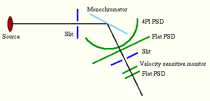
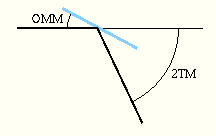
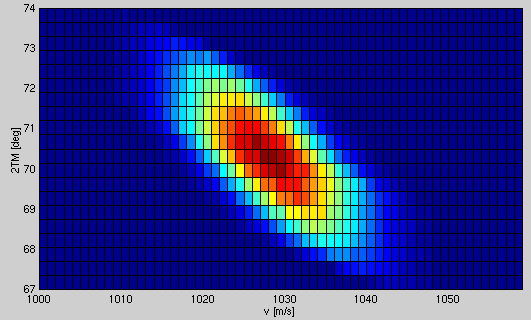
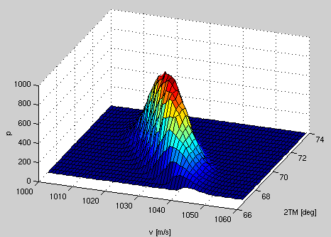
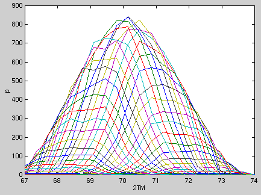
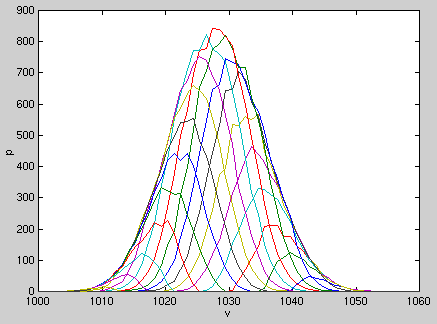
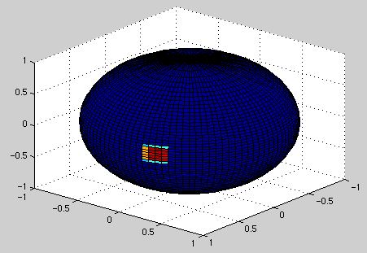
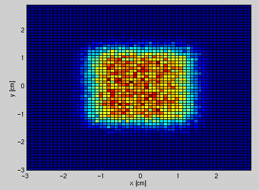

Monochromator
components. The instrument setup consists of the source and a monochromator, with narrow slits placed before and after the monochromator. A
number of detectors/monitors complete the tests: A 4PI PSD monitor and a flat PSD monitor is placed just after the
monochromator to measure the shape of the outgoing beam, and a energy-sensitive monitor and another flat PSD
after the slit to analyse the energy distribution.

The setup is like the first part of a standard triple axis spectrometer, so that the monochromator may be rotated an angle OMM and the axis containing the second slit and the detectors may be rotated an angle 2TM.

See also the source code for the instrument definition.To test the monochromator component, the monochromator was set to OMM=35 deg, and the velocity distribution of outgoing neutrons was measured for different values of 2TM. This results in the following plot of the beam intensity as a function of neutron velocity v and angle 2TM:

The Q vector of the monochromator is set to 1.87325Å, or 1179.3 m/s. This should result in scattered neutrons of velocity v = Q/(2*sin(OMM)) = 1028 m/s, emitted at an angle of 2TM = 2*OMM = 70 deg. Because of the divergence of the beam and the mosaicity of the monochromator, there is a broadening effect with a peak nicely centered around 1028 m/s and 70 deg.
This is a 3D view of the same plot that better shows the "shape" of the distribution:

Here are plots of constant v/constant 2TM versus intensity:

This plot from the 4PI PSD shows the outgoing beam from the monochromator. The monochromator component scatters all neutrons, and assign an appropriate weight based on incoming velocity and direction. Therefore, neutrons are only emitted in the scattering direction.

This plot from the first flat PSD presents a slose-up cross section of the outgoing beam.